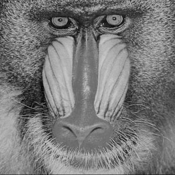
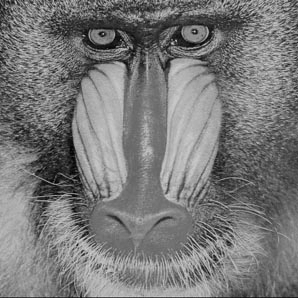

Project 3.b 图像处理
在这个 project 中, 你将使用 Java 进行一些简单的图像处理任务: 包括修改图像颜色, 尺寸以及为图像增加滤镜效果等. 你将看到, 一个好的包通过提供恰当的接口 (API) 能够帮助程序员在不了解底层实现的情况下便捷高效的完成工作. 在具体描述作业之前, 我们首先介绍 Java 内置的颜色类 (java.awt.Color), 以及一个由其他开发者提供的图像类 (Picture.java).
颜色
Java将颜色抽象成为 Color 类. 如果需要进行与颜色相关的操作, 需要在源文件开头处出加入以下语句:
Color 类使用RGB模型表示颜色. 每种颜色被三个整数确定. 每个整数的取值范围是 0 到 255, 分别表示红, 绿, 蓝三种颜色的强度. 这三种颜色的不同组合可以产生 256^3 种不同的颜色. 下表是一些颜色的 RGB 表示:
| 红 |
255 |
0 |
0 |
| 绿 |
0 |
255 |
0 |
| 蓝 |
0 |
0 |
255 |
| 黑 |
0 |
0 |
0 |
| 深灰 |
100 |
100 |
100 |
| 白 |
0 |
0 |
0 |
| 黄 |
255 |
255 |
0 |
| 品红 |
255 |
0 |
255 |
| 褐 |
160 |
82 |
45 |
创建不同的颜色需要通过 Color 类的构造函数和new操作符:
Color 类的提供所有方法 (API) 在 Java文档 中可以查询到. 其中我们可能会用到的方法总结如下. 我们建议在开始作业之前, 你可以尝试创建一些颜色, 并对所创建的颜色对象调用这些方法, 输出它们的返回值, 以便帮助你理解这些 API 的作用.
| Color(int r, int g, int b) |
Color 对象的构造函数 |
| int getRed() |
获得红色的强度 |
| int getGreen() |
获得绿色的强度 |
| int getBlue() |
获得蓝色的强度 |
| Color brighter() |
返回一个更深的颜色 |
| Color darker() |
返回一个更浅的颜色 |
| String toString() |
该颜色的String表示 |
| boolean equals(Color c) |
是否与颜色c相同 |
下面我们将以计算颜色的亮度 (Luminance) 为例, 说明如何使用 Color 类. 颜色的亮度表征了显示该颜色时需要使用多少强度的光. 直观上亮度越大, 该颜色越明亮. 严格的定义如下:
亮度 = 0.299*r + 0.587*g + 0.114*b
其中, r, g, b分别代表该颜色的红, 绿, 蓝强度. 以下为对应的 Java 函数:
数字图像
一幅数字图像 (digital image) 在计算机内部被表示成像素矩阵 (pixel matrix). 每一个像素都有自己的颜色. 类比来说, 每个像素好比拼图玩具中的一块, 它们单个看起来都只是简单的色块, 但不同的块组合在一起就能构成完整的图画.
在本次作业中, 我们将使用一个名为 Picture.java 的包. 它提供了对图像操作的封装. 它的详细的文档在这里. 我们将会用到的部分方法总结如下:
| Picture(String s) |
从文件 s 创建一个图像对象 |
| Picture(int w, int h) |
创建一个宽为 w, 高为 h 的空白图像 |
| int width() |
获得图像的宽度 |
| int height() |
获得图像的高度 |
| Color get(int i, int j) |
返回像素 (i, j) 的颜色 |
| void set(int i, int j, Color c) |
设置像素 (i, j) 的颜色为 c |
| void show() |
将该图像显示在一个窗口中 |
| void save(String s) |
将该图像保存为文件 s |
实验内容
通过命令行参数给定一个图片文件, 输出它的长和宽. (以下各题中的图片文件, 参数都通过命令行参数形式给出).
给定一个图片文件, 将其转换成为相应的灰度图 (Grayscale). 当 RGB 颜色模型中红绿蓝三色强度取相同值 v 时, 该颜色为灰色, 其灰度值为 v (0<= v <= 255). 图片的灰度图可以通过如下方法得到: 将图中每个像素点的颜色置为灰色, 且这些灰色的灰度值等于该颜色亮度.
 

给定一个图片文件, 以及参数 w, h, 将其转换成为宽为 w, 高为 h 的图片.


给定一个图片文件, 以及参数N. 输出 N 张图片, 其中第n张图片为从输入图片和其对应灰度图的一个渐变图.
给定一个图片文件, 以及参数x, y, E. 输出原始图片的一个正方形裁剪, 其中正方形的中心在 (x, y), 边长是 E. x, y, E 为百分比. 例如 x=10, y=20, E=20, 表示中心位于 原始图片宽的10%, 高20%处. 边长为原始宽度的20%.
给定一个图片文件, 产生该图片的一个镜像图片(关于 y 轴对称)
滤镜 (filters) 可以看作对像素矩阵的某种变换. 通过添加滤镜, 我们可以改变图片的视觉效果. 请实现以下滤镜.
- Linear filter: 每一个像素的颜色变为周围 9 个像素点(包含它本身)颜色的平均值. 这个变换等价于将矩阵[1, 1, 1; 1, 1, 1; 1, 1, 1]/9 与 9个像素点做 卷积 (Convolution) . 而这个矩阵被称为卷积矩阵 (convolutional matrix). 关于卷积矩阵可以参考1, 2.
- Blur filter: 卷积矩阵为 [1/13, 1/13, 1/13; 1/13, 5/13, 1/13; 1/13, 1/13, 1/13].
- Emboss filter: 卷积矩阵为 [-1, 0, 1; -1, 1, 1; -1, 0, 1], 或者 [1, 0, -1; 2, 0, -2; 1, 0, -1] 或者[-1, -1, 0; -1, 1, 1; 0, 1, 1].
- Sharpen filter: 卷积矩阵为 [0, -1, 0; -1, 5, -1; 0, -1, 0].
- Oil painting filter: 给定参数 w, 将每个像素 (i, j) 的颜色替换为所有与 (i, j) Manhattan 距离 小于 w 的像素点中出现次数最多的颜色. 其中 Manhattan 距离(也称为 \(l_1\) 距离)定义见 3, 4.
提升一张图片的亮度 (Brightness).
图片的滤镜效果可以看成像素矩阵的一种变换. 相比于使用固定的卷积矩阵, 这些复杂的滤镜可能经过了美工设计师的设计. 但无论怎样, 确定某种滤镜对应的变换, 只需确定每种颜色经过滤镜后被变换成了哪一种颜色. 选择一款手机App(比如Instagram, 足迹, 美图秀秀等) 以及其中的一个内置滤镜, 编写一个java程序来实现这个滤镜.